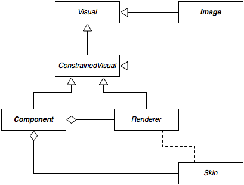

All Pivot components ultimately extend the base Component class. This class, in conjunction with the similarly abstract Container class, defines the APIs that specify where a component will appear on screen, what it will look like, and how a user will interact with it.
Visual and ConstrainedVisual

As shown in the diagram, Component implements the ConstrainedVisual interface. This interface extends the Visual interface, which defines methods common to all visual elements in Pivot. The org.apache.pivot.wtk.media.Image class also implements the Visual interface:
public int getWidth()
public int getHeight()
public int getBaseline()
public void paint(Graphics2D graphics)
A visual's size is specified in "device-independent units"; though these generally map one-to-one to actual pixels on an output device, they are not required to do so. This allows Pivot applications to be written in a resolution-independent manner, supporting UI scaling either for accessibility purposes or for very high resolution output devices. The getBaseline() method allows a visual to report a baseline offset, which is used by containers that support it to align components to a common baseline.
The paint() method is called as needed to ensure that the visual's current state is correctly represented on-screen. For example, a component may need to be repainted when an internal value, such as a button's label, has changed, or when some part of the component has been exposed due to an overlapping window or other component having been moved or resized.
ConstrainedVisual adds methods to support layout, which is discussed in more detail below:
public void setSize(int width, int height)
public int getPreferredWidth(int height)
public int getPreferredHeight(int width)
public Dimensions getPreferredSize()
public int getBaseline(int width, int height)
In addition to Component, the Skin and Renderer interfaces also extend ConstrainedVisual. In Pivot, a component's "skin" is responsible for the visual representation of the component. As a result, Component delegates the implementation of all ConstrainedVisual methods to the skin. The skin may, in turn, delegate some renderering responsibility to one or more renderers, which are used to paint some components' content (such as a button label or a list item); this relationship is represented by the dotted line in the diagram. Renderers are often implemented as extensions of the Component class, allowing the component's implementation of ConstrainedVisual to be re-used (and giving rise to the notion of renderers as "lightweight components").
Components are painted in the order in which they are defined in the parent container's component sequence. The component sequence thus defines the "z-order" of the components in the container: components are painted in ascending order, allowing higer components to overlap lower ones. Z-order is often only noticeable at the window level - individual components within an application are generally arranged such that the user can see and readily interact with them. This process, called "layout management", is generally handled automatically in a Pivot application, and is discussed next.
Layout
"Layout management" is the process of automatically determining how components should be arranged on screen, as opposed to requiring the the developer to explicitly set component size and position. Layout management is performed by all Pivot containers, and is the responsibility of a container's skin.
ConstrainedVisual's preferred size methods, getPreferredWidth(), getPreferredHeight(), and getPreferredSize(), return information about the size the visual "wants" to be. This is generally determined based on attributes such as font size and border thickness, or, in the case of containers, by recursively asking subcomponents about their own preferred sizes. Containers may use this information to determine how to arrange their subcomponents during layout.
In Pivot, preferred sizes may optionally be constrained by passing a height constraint value to getPreferredWidth() or a width constraint value to getPreferredHeight(). This allows components to "wrap" their contents. For example, a Label component with the "wrapText" style set to true will report a preferred height that is tall enough to render its entire content by applying line break logic using the given width constraint.
ConstrainedVisual defines an additional signature for getBaseline() that takes width and height arguments. This allows a component to report a constrained baseline given a possible width and height (for example, a label whose content is vertically aligned to bottom will report a different baseline than one that is vertically aligned to top when it is given more than its preferred height).
Location and Visibility
Component defines several additional methods that are used by containers during layout:
public int getX()
public int getY()
public Point getLocation()
public void setLocation(int x, int y)
public final void setLocation(Point location)
These methods are used to manage a component's location, which is defined as an (x, y) coordinate pair that is relative to the origin of its parent container.
public boolean isVisible()
public void setVisible(boolean visible)
These methods manage a component's visibility. A component that is not visible is not painted. Layout containers will also exclude non-visible components from layout.
Container skins use the preferred size and visibility values to determine how to arrange their subcomponents. They first query the subcomponents for the preferred values, and then use these values to set the components' actual size and location. As a result, callers should generally not invoke the methods that set these properties directly, since the container is likely to override any values set by the caller during layout.
It is important to note that containers are not required to respect a component's preferred size or visibility. For example, CardPane sets the size of its subcomponent to the maximum preferred size of all its child components, and TablePane sets the size of its components based on the width of its rows and columns. However, most respect at least one, and many respect both.
Disabled Components
A component that is "enabled" is currently capable of receiving user input. A component may be "disabled" to prevent it from receiving input from the user. For example, buttons are often disabled to prevent a user from initiating an action that would not be appropriate for the current state of the application. Most components display a disabled state to indicate to the user that interaction is currently forbidden.
Note that, while a user is prevented from interacting with a disabled component, programmatic interaction is still allowed. For example, it is still valid to set the selection state of a disabled list view component in code, even though the user cannot click on an item in the list to change the list's selection state.
Also note that disabling a container will prevent all child components of the container from receiving input as well. Thus, there is no need to propagate the enabled state of a container down to its children. When a component is either disabled or one of its ancestors is disabled, it is said to be "blocked".
Focus Management
A component that is eligible to receive keyboard input is said to have the "input focus", or simply "focus". Only one component is allowed to have the focus at any given time. Not all components are focusable, though many are, including text inputs, buttons, and list views, among others. It is up to a component's skin to decide whether or not it is capable of receiving focus. In order to receive the focus, a component (and its ancestry) must be enabled, visible, and focusable.
Generally, a focusable component will paint a slightly different state when it has the focus as a visual cue to the user. For example, a text input may show a blinking cursor, while a button might draw a dotted line around its label.
Clicking on a component with the mouse will usually transfer focus to that component. However, focus can also be transferred between using the Tab (or Shift-Tab) key. This is called "focus traversal". Each container provides a "focus traversal policy" that defines how focus management is performed within the container. By default, most containers use a default traversal policy that simply traverses child components in the order in which they appear in the container's component sequence. However, windows use a traversal policy that ensures that focus is never transferred out of the window itself; tab panes employ a similar policy. However, callers and skin developers are free to override these defaults and can install a custom traversal policy on any container.
Cursors
A component's skin will generally ensure that an appropriate cursor is displayed when the mouse is over the component. However, a caller may customize the component's cursor using the setCursor() method of Component. Valid cursor values are defined by the Cursor enum.
Styles
Styles are a means of customizing a component's appearance. They are implemented as named properties exposed by a skin via the component. For example, a label skin might define styles such as "font", "color", and "textDecoration", and a list view skin might define styles including "font", "color", "selectionColor" and "selectionBackgroundColor". These properties correspond directly to the Java bean getters and setters defined by the skin class.
By design, skins are programmatically hidden from the developer; a caller interacts with a skin's styles via the component's style collection, an instance of org.apache.pivot.wtk.Component.StyleDictionary returned by Component#getStyles():
public Object get(String key) - returns the value of a given style
public Object put(String key, Object value) - sets a style value
This facilitates a loose, flexible coupling between an application and a skin: an application need not be tied to a particular skin implementation, and skin developers are free to add or remove styles without the risk of breaking existing applications. However, it becomes the responsibility of the caller to be aware of the styles supported by the current skin. Attempting to set a non-existent style value will simply generate a warning, but passing an invalid type for a valid style will throw an exception.
Style values can be set in WTKX using the "styles" attribute. The value of this attribute is a JSON-formatted string representing the style values to be applied to the component after it is constructed. For example, the following attribute applied to the Label element would produce a bold, 24-point Arial label with red text:
styles="{font:'Arial bold 24', color:'#ff0000'}"
Styles can also be set via a URL reference to a JSON file, allowing common style settings to be shared across multiple components, similar to CSS classes:
styles="@myStyles.json"
Attributes
Attributes are a means of attaching container-specific properties to a component. Attributes are typed values defined by containers that support or require them. For example, TabPane defines a "label" attribute that allows a caller to specify the text that is displayed on the tab button for the component; TablePane defines a "rowSpan" attribute that determines how a cell is laid out. Attributes effectively allow a caller to "tag" a component with values that are relevant only to its parent container (and the container's skin).
Callers can set attribute values programmatically using a static setter method of the Container subclass (e.g. TabPane#setLabel(Component, String)). Alternatively, attributes can be specified in WTKX. For example, the sub-elements of a TabPane can provide a "TabPane.label" attribute to specify the value that should be used as the name for that component.
Events
In GUI programming, the term "event" generally refers to a notification sent by a program in response to some triggering action. The trigger may have been input from the user, a response from a remote server, or a change in some internal state.
Pivot components rely heavily on events, both to respond to change notifications from data models or other components and to notify external listeners of changes to their own states. Each concrete component class defines a set of events specific to its own implementation, and all components inherit a set of common events defined by the base Component and Container classes.
Events are often placed into groupings of events that share some common characteristics. For example, Component defines a set of mouse button events that include "mouse down", "mouse up", and "mouse click". Components maintain a list of listeners who have registered interest in a particular group of events, and each listener is notified, in turn, as events occur.
Event listeners implement a listener interface defined for a particular group. For example, component mouse listeners implement the ComponentMouseListener interface, which defines the following methods:
public void mouseMove(Component component, int x, int y)
public void mouseOver(Component component)
public void mouseOut(Component component)
A caller that implements the ComponentMouseListener interface can add itself as a listener by calling Component#getComponentMouseListeners().add(). Conversely, a listener can remove itself via the Component#getComponentMouseButtonListeners().remove() method. Other event listeners are registered and unregistered similarly.
Component defines the following event listener interfaces that are inherited by all component subclasses:
-
ComponentListener - defines events related to core component properties including location, size, visibility, etc.
-
ComponentStateListener - defines events related to component enabled and focus state.
-
ComponentDecoratorListener - defines events related to component decorators.
-
ComponentMouseListener - defines events that are fired when the mouse is positioned over the component.
-
ComponentMouseButtonListener - defines mouse button events.
-
ComponentMouseWheelListener - defines mouse wheel events.
-
ComponentKeyListener - defines events that are fired when the component has the input focus.
-
ComponentDataListener - defines events that are fired when component user data changes.
-
ComponentClassListener - defines events that are fired when class-level component properties change.
The Container class defines the following additional events that are inherited by its subclasses:
-
ContainerListener - defines events related to core container properties including insertion/removal of components.
-
ContainerMouseListener - defines events that are fired when the mouse is positioned over the container.
Note that both Component and Container define interfaces related to mouse events. Container mouse events are "tunneling" events, and are fired as an event is propagated down the container hierarchy, whereas component mouse events are "bubbling" events, and are fired as the event moves up the container hierarchy. In other words, the parent of a component will receive a container mouse event before the component does, but the component will recieve a component mouse event before its parent does.
Next: Labels & Image Views